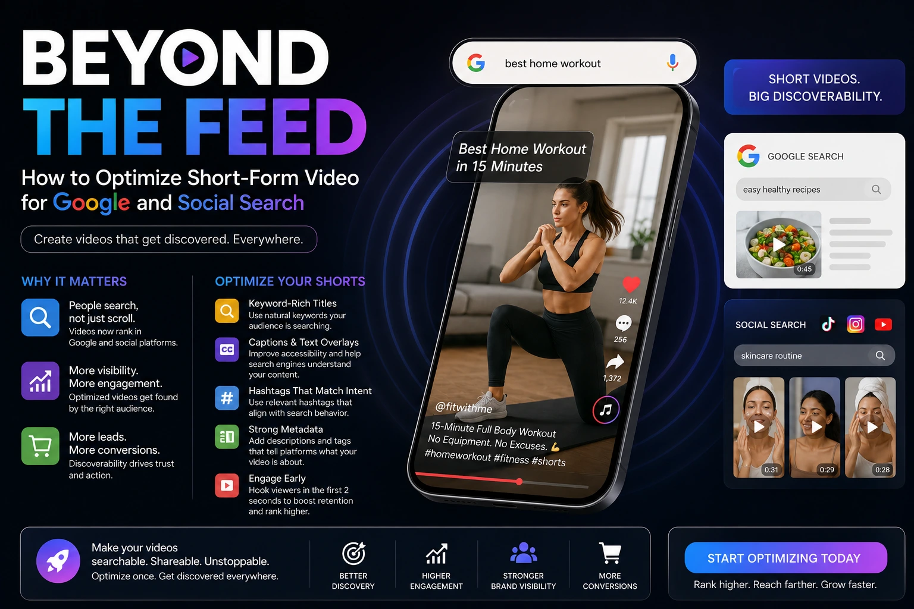
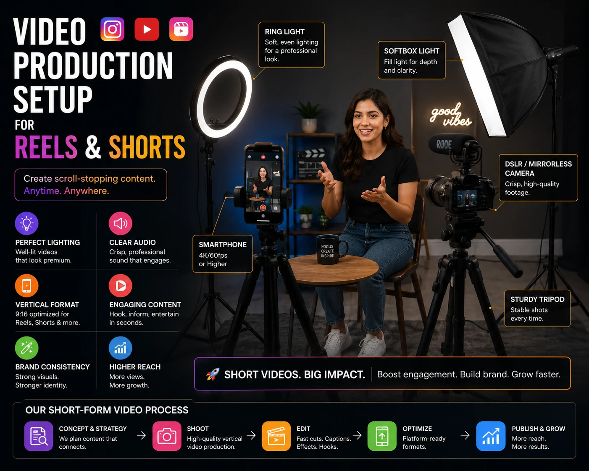
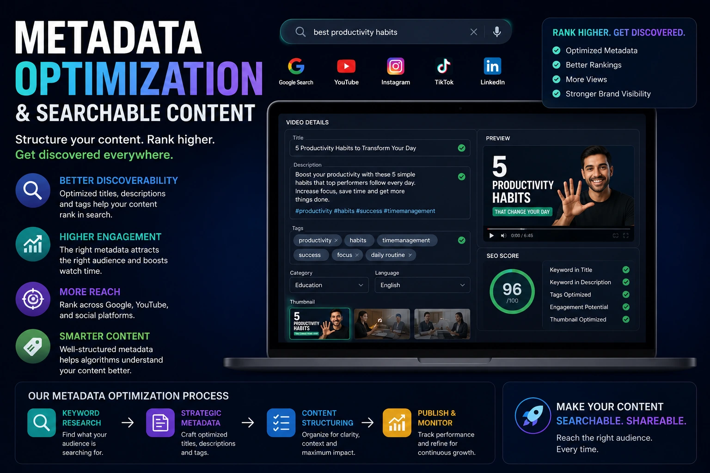

Beyond the Feed: How to Optimize Your Short-Form Video for Google and Social Search
Why Short-Form Video Is Now a Search Asset
Most brands treat short-form video as a feed content format — something that gets watched, generates some engagement, and then disappears into the algorithm's past. This is the most expensive misunderstanding in digital marketing today. Short-form video production that is optimised for search — on Google, on YouTube, on Instagram, on LinkedIn — generates discoverable, compounding traffic that continues to deliver long after the initial post date.
In 2026, Google surfaces video content — including YouTube Shorts — in standard search results, video carousels, and Google Discover feeds. Instagram's search function returns Reels results for keyword queries. YouTube's algorithm surfaces Shorts in response to search terms the same way it surfaces long-form videos. The brands that understand this are building searchable video content libraries that drive organic traffic from multiple search surfaces simultaneously. The brands that do not are paying to reach audiences that platform-optimised video would reach for free.
How Each Platform Indexes Short-Form Video
Effective social media SEO for video requires understanding how each platform's search and recommendation algorithm reads, categorises, and surfaces video content. The signals are different on each platform — and the optimisation approach must reflect those differences.
Instagram Reels
Caption text, on-screen text overlays, hashtags, audio track, and first-hour engagement signals. Instagram's search function now surfaces Reels for keyword queries — caption language matters as much as hashtags.
YouTube Shorts
Title, description, tags, and completion rate. YouTube indexes Shorts titles and descriptions the same way it indexes long-form content — keyword-rich, specific titles are the highest-leverage optimisation available.
Google Search
YouTube Shorts appear in Google Search video carousels, Google Discover, and dedicated video results. VideoObject schema on embedded video pages significantly improves Google indexing for non-YouTube platforms.
LinkedIn Video
Caption text, native upload (not linked), first-connection engagement velocity, and topic relevance signals. LinkedIn's algorithm currently prioritises native video over linked content by a significant margin.

Instagram Reels SEO: The Caption-First Approach
Instagram Reels SEO is built on a principle most brands are not applying: Instagram reads caption text and uses it to categorise content for search and discovery. Writing a caption with the keyword language your target audience actually uses — as if answering a question they would type into a search bar — is the most consistently effective Reels discoverability practice available.
The checklist for Instagram Reels SEO on every video published:
- Caption opens with keyword language. The first line of the caption — the line visible before "more" is tapped — should contain the primary keyword the video is targeting. Not a hook. Not a question. The keyword phrase itself, naturally embedded in an opening sentence.
- On-screen text mirrors the caption keyword. Instagram's algorithm reads text overlaid on the video itself. On-screen text that mirrors the primary keyword in the caption reinforces the topical signal and improves categorisation accuracy.
- Hashtags are topic signals, not reach tools. In 2026, hashtags on Reels function primarily as topic categorisation signals for the algorithm rather than as reach amplifiers. Use three to five highly specific, topic-relevant hashtags rather than a mix of broad and niche tags.
- Audio selection matters for trending reach. Reels using currently trending audio tracks are distributed to the Explore and Reels feed more aggressively than those using original audio. For short-form video production targeting broad reach, selecting a trending audio track within the first 48 hours of its peak is a meaningful distribution advantage.
- Post timing targets first-hour engagement velocity. Instagram's algorithm weights the engagement rate in the first 60 minutes after posting heavily in its distribution decision. Posting when your specific audience is most active — not just when general benchmarks suggest — maximises first-hour velocity and the broad distribution that follows.
YouTube Shorts Marketing Strategy: Search-First Production
YouTube Shorts marketing strategy differs from Instagram Reels in one critical way: YouTube is a search engine first and a social platform second. Every piece of searchable video content published on YouTube — including Shorts — is indexed against keyword queries. The title and description of a YouTube Short are as SEO-significant as the title and meta description of a web page.
The framework for YouTube Shorts marketing strategy that builds searchable traffic rather than just feed reach:
- Keyword-research your Shorts titles before production. Use YouTube's search autocomplete and Google's "People Also Ask" results to identify the exact keyword phrases your target audience is using. Build Shorts titles around these phrases — specific, descriptive, and matching the language of actual search queries rather than creative copywriting.
- Write Shorts descriptions as keyword-rich summaries. YouTube indexes Shorts descriptions in full. A 150 to 200 word description that naturally incorporates the primary keyword, two or three secondary keywords, and a clear description of the video's specific content significantly improves search discoverability compared to a two-line description or no description at all.
- Cross-link Shorts with long-form content. YouTube's algorithm frequently recommends Shorts and long-form videos from the same channel together in search results and recommendation panels. A Short that introduces a topic and links to a long-form video that explores it in depth builds a content ecosystem that improves discoverability for both formats simultaneously.
- Optimise completion rate through pacing. YouTube Shorts are indexed in part by completion rate — the percentage of viewers who watch from start to finish. Shorts with a strong hook in the first two seconds, consistent pacing throughout, and a clear ending that does not trail off outperform those with slow openings or abrupt cuts on completion rate, and are distributed more broadly as a result.
TikTok for Business India: The Search Behaviour Shift
TikTok for business India operates in a unique regulatory and market context, but the search behaviour shift it represents is relevant to every short-form platform. Research consistently shows that Gen Z and millennial audiences increasingly use short-form video platforms as search tools — searching for product reviews, how-to content, local business recommendations, and category education the same way older demographics use Google.
For Indian brands producing short-form video production content across Instagram Reels and YouTube Shorts, the TikTok search behaviour pattern is the signal to follow: produce video content that answers specific questions your target audience is searching for, use the exact keyword language they use in their searches, and structure the video to deliver the answer clearly and quickly. This is the content that performs in search results on every platform — regardless of which specific platform dominates in any given year.

Video Metadata Optimization for Brands: The Complete Framework
Video metadata optimization for brands is the practice of writing keyword-relevant titles, descriptions, tags, captions, and on-screen text for every piece of video content — ensuring that platforms and search engines can accurately categorise and surface it to relevant audiences. Here is the complete metadata framework for every short-form video published:
Pre-Production Metadata
- Keyword research the topic before scripting
- Build the title and caption before the shoot
- Script on-screen text to mirror target keywords
- Plan the hook around the search query the video answers
Production Metadata Signals
- On-screen text overlays with keyword language
- Spoken keywords in the first 10 seconds of audio
- Closed captions that are accurate and keyword-rich
- Visual content that matches the keyword topic clearly
Post-Production Metadata
- Keyword-optimised title (YouTube) or opening caption line (Instagram)
- 150–200 word keyword-rich description (YouTube)
- Three to five topic-specific hashtags (Instagram, LinkedIn)
- Accurate closed captions uploaded or auto-generated and corrected
VideoObject Schema: Making Short-Form Video Discoverable on Google
For brands publishing short-form video production content on their own website — embedded Reels, hosted video, or linked Shorts — adding VideoObject JSON-LD schema to the page is the technical SEO step that most brands miss entirely. VideoObject schema tells Google's crawler exactly what the video contains, enabling it to appear in Google's video search results, video carousels in standard search results, and Google Discover video feeds.
The minimum VideoObject schema required for Google indexing:
- name: The video title, written as a keyword-targeted title matching the search query the video answers
- description: A 150 to 250 character description of the video's specific content, incorporating the primary keyword naturally
- thumbnailUrl: A high-quality thumbnail image URL — this is the image Google displays in video search results, and it significantly affects click-through rate
- uploadDate: The ISO 8601 formatted date the video was published
- duration: The video duration in ISO 8601 format (e.g., PT1M30S for one minute thirty seconds)
- contentUrl or embedUrl: The direct URL of the video file or the embed URL of the video player
Brands that consistently apply VideoObject schema to every embedded video page across their website build a searchable video content library that generates Google traffic independently of social platform algorithm changes — a durable, platform-agnostic organic traffic asset.
The Production Quality and SEO Relationship
Social media SEO and production quality are not separate considerations. Every major short-form platform's algorithm uses completion rate, rewatch rate, and save rate as primary signals for content quality — and these engagement signals are directly influenced by production quality. A video with clear audio, good lighting, and a visually compelling opening frame holds viewer attention longer than a poorly produced equivalent on the same topic.
For brands investing in short-form video production to build searchable content libraries, the production quality investment and the metadata optimisation investment are mutually reinforcing. High-quality production improves the engagement signals that algorithms use to determine distribution. Strong metadata optimisation ensures that the well-produced content reaches the right audiences through search. Neither works at full effectiveness without the other.
Building a Searchable Short-Form Video Content Calendar
Searchable video content is built through consistency and planning rather than reactive posting. The brands generating the most compounding organic video traffic in 2026 are operating from a content calendar built around keyword clusters — groups of related search queries that map to the brand's product categories, expertise areas, and audience questions.
The framework for a searchable short-form video content calendar:
- Identify five to eight keyword clusters relevant to your brand — each cluster is a topic area that your target audience searches for and that your brand has genuine expertise in.
- Map three to five specific search queries within each cluster — these become the topics for individual Shorts and Reels, each targeting one specific query.
- Produce in batches. A single short-form video production session producing eight to twelve videos across two or three keyword clusters is significantly more efficient than producing one video at a time, and ensures consistent visual quality and brand identity across the content calendar.
- Distribute with platform-specific metadata. The same core video content, published with platform-specific titles, captions, and hashtags on YouTube Shorts, Instagram Reels, and LinkedIn, reaches three different search surfaces without requiring three separate production sessions.
Conclusion
Short-form video production that stops at the feed level is leaving the most durable value in digital marketing on the table. Instagram Reels SEO, YouTube Shorts marketing strategy, VideoObject schema, and disciplined video metadata optimization for brands transform short-form video from a feed format into a searchable, compounding organic traffic asset that delivers long after the initial post date.
The brands building searchable video libraries in 2026 are building a competitive advantage that compounds with every video published — an asset that earns reach through search rather than renting it through paid distribution. The ones treating short-form video as feed content alone are rebuilding their audience from zero every time the algorithm changes.
At The PhD Ads, we produce short-form video production content built for both feed performance and search discoverability — from keyword-researched scripts and on-screen text strategy to platform-specific video metadata optimization for brands across Instagram Reels, YouTube Shorts, and LinkedIn.
Key Topics
Ready to Make Your Short-Form Video Work Harder?
At The PhD Ads, we specialise in short-form video production built for search — keyword-researched scripts, platform-native formatting, and complete video metadata optimization for Instagram Reels, YouTube Shorts, and LinkedIn across India.
Email: team@e2o.in